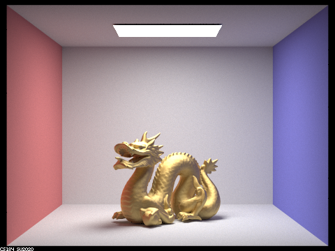
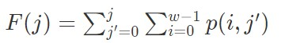

In this project, we added additional effects to project 3-1. Our last project had mainly focused on lighting and shading and the works -- this part of the project focused on rendering different types of materials and environment lighting. The material rendering we chose was the microfacet one, which is a model that is relevant to isotropic rough conductors that only reflect. Environment lighting refers to light that gets radiance from all directions in a sphere to make it more realistic, using a texture map to get the intensity of that sampled light. For this part, importance sampling plays a huge role in decreasing noise by focusing on sampling where the effect of the incoming radiance is the most. For this project, a lot of the functionality built depended on several rather complicated mathematical expressions. So it was difficult translating some of it to code, both in the sense of structuring for loops, for example, and also in making sure there aren't careless mistakes. We addressed these by walking through our logic with each other and with TAs, printing out the values generated from the environment map, simplifying the logic and then gradually building up complexity, etc. However, when we figured it out, it was really cool to see our renderings become more and more realistic and reflective. Environment lighting and microfacet material were both new concepts to us and we really enjoyed seeing them in action after implementing it.
One random issue we were also having on one of our members laptops (Manaal's Windows laptop :/ ) The run command given in the spec never works for Windows and I had some trouble configuring the run path in command line, especially since ls and those commands don't exist in Windows
Part 2: Microfacet Material
Spheres Example
Implementing Microfacet Material
For part 3-2, we were tasked with implementing microfacet material which allows us to render metallic materials. The microfacet material has many small reflections resulting from its composition of tiny micro-like mirrors on its surface. The reflections bouncing off of these mirrors create the specularity of the material. To implement the microfacet material, our process begins by implementing the Microfacet Bidirectional Reflectance Distribution Function (BRDF), which will help us define how light will be reflected as detailed by the microfacet theory.
This process relied mainly on 4 tasks: calculating the BRDF, implementing the Normal Distribution Function (NDF), finding the Fresel Term (F), and implementing importance sampling.
In MicrofacetBSDF::f(), we first check if our w_i and w_o are valid by checking that both dot(n, w_i) and dot(n, w_o) are greater than 0. Our n = (0, 0, 1) represents the macro surface normal in local coordinates, and h, which we use later in our calculations, is the half-vector bisecting the incident light ray and the outgoing light ray. To find the BRDF, we first calculate the NDF * shadowing-masking term * F, dividing the total by a scalar and the surface normal's dot products with the incoming and outgoing rays as represented in the function given below. The shadow-masking term calculation is already given to us and fairly trivial, so in the next parts we implement the NDF and F calculations.
The NDF represents the distribution of the normals of the microfacet. When a normal lies on the half-vector h of the incoming w_i and outgoing w_o vectors, there is a reflectance from the incoming vector to the outgoing vector. It describes the shape of the surface as a distribution of microfacet orientation, essentially serving as a way to weigh the brightness of the reflections within the BRDF function. The model we use for NDF is the Beckmann distribution to calculate our normal distribution. As we'll mention below, the value of alpha used changes the roughness of the material. Remembering that alpha represents roughness of the material and θ is the angle between the aforementioned half vector and the macro surface normal n, The NDF is therefore represented through:
The shadowing-masking term quantifies the probability of a microfacet being visible in the ingoing (shadowing) and outgoing (masking) directions. The calculations were given with the equation below and changes with the alpha value:
Shadow-masking term = 1.0 / (1.0 + Lambda(wi) + Lambda(wo));
The Fresnel term, which models the amount of light that will be included in the specular reflection (compared to the diffuse reflection), is calculated in the formula below using RGB wavelengths to represent eta and k at the respective metal material. The main role of the Fresnel term is thus to represent the color output. The wavelengths tells us how the light waves propogate. Note that the below is for the air-conductor term, with the "assumption" that each channel has a fixed wavelength:
Finally, we replace cosine hemisphere sampling with importance sampling, as cosine hemisphere sampling is only good in the case of diffuse BRDFs and not as suitable for Beckmann distrubtion. We need to change that, so it corresponds with the shape of the NDF, since that is crucial towards the geometry of the reflection. We start by using Beckmann's equation to create the pdf of the incident light ray w_i. We first calculate θh and ϕh using the random sampled values given, random values between [0, 1), to get the microfacet normal h.
Using theta and phi, we convert the spherical coordinates to find the x, y, and z coordinates of h. Reflecting over w_o according to h, we sample w_i, our incoming light ray.
Vector3D h = Vector3D( sin(theta_h)*cos(phi_h), sin(theta_h)*sin(phi_h), cos(theta_h))
With our sampled microfacet h, we can calculate w_i by reflecting w_o according to h with:
w_i = (2*dot(wo, h)*h)-w_o
Now that we have our incoming light ray, we just need to calculate the pdf of w_i with respect to the solid angle. We start by using the inversion method to find the pdfs of θh and ϕh. Ideally, our pdfs will resemble the NDF, meaning that there will be a higher convergence in our output.
Using this, we can calculate the pdf of h with respect to the solid angle.
With all these steps, we can now calculate the pdf of w_i with respect to the solid angle which we can now use in our BRDF calculations:
Differences between Uniform Sampling and Importance Sampling
Below is a comparisons between uniform cosine hemisphere sampling and importance sampling at a rate of 64 samples per pixel and 1 samples per light as well as a max depth of 5 bounces.
In the left image, the uniform cosine hemisphere sampling is extremely noisy. Alternatively, on the right image, the importance sampling still contains a bit of noise, but the material is much more noticeable and easy to view. Uniform cosine hemisphere sampling converges much slower than importance sampling. Despite having the same amount of samples, importance sampling performs much better for microfacet materials.
|
Bunny with Uniform Sampling |
Bunny with Importance Sampling |
Changing the Microfacet BRDF with α
One feature of microfacet material is the alpha α value. Alpha represents the roughness of the macro surface, generally ranging between 0.005 and 0.5. A large α tends to appear more diffused while glossier when α is smaller.
When the α is smaller, the specularity of the surface is high. Due to the specularity, some white spots can be seen in the scene. These white spots are rendering artifacts often labeled as "fireflies" that result from tiny pdf values being bumped into the ray path and causing the radiance to spike in one-directional path tracing. However, these issues often go away with higher sampling counts. You can see an example of this below. For the low alpha of 0.005, fireflies can be seen, but as the alpha becomes larger, the image becomes more diffused to where no fireflies can be seen.
When α = 0.005, the image appears very noisy all around the box. The dragon is also quite shiny and has stark reflections, almost like a mirror would. The Cornell Box can also be seen reflected on the dragon itself with tints of red and blue being seen reflected (global illumination).
As we increase α to be α = 0.05, we have a very similar image to α = 0.005, but the white spots are harder to see and the image is less noisy. We can also still see blotches of black, meaning there is no light coming from the direction being reflected.
Increase α to α = 0.25, the dragon begins to look starkly different. While the image still has some reflection being shown, the material is much more dull.
Finally, α = 0.50, the dragon looks very matted and diffused. There is a light shine on the dragon from the light, but it is much more spread out compared to the spiked radiance reflections in α = 0.005. This output is the least noisy.
To render the CBdragon_microfacet_au.dae, we rendered with 128 samples per pixel, 1 sample per light, and a max depth of 5 bounces.
|
α = 0.005 |
α = 0.05 |
|
α = 0.25 |

α = 0.50 |
Implementing Palladium material
To further explore metallic materials, we implemented Palladium (Pd). Each material has different η and k values that consists of 3 RGB wavelengths. We implemented the respective eta and k values at red (614 nm), green (549 nm), and blue (466 nm) wavelengths referenced using a reflective index resource.
The η and k values representing Palladium (Pd) are as follows:
η = (1.7440, 1.6400, 1.4475)
k = (4.1937, 3.8400, 3.3575)
|
Palladium, α = 0.005 |
Palladium, α = 0.05 |
|
Palladium, α = 0.25 |
Palladium, α = 0.50 |
Part 3: Environment Lighting

Part 3 - Environment Lighting Overview
This portion focused on creating realistic lighting renders based on complex environment texture maps and the light distributions they result in from "infinitely" far away light sources. When we observe objects in the real world, we know that light arrives from all directions. So in the past project, while we focused on having more of an emphasis on point source or directional light sources, this part of the project takes that a step further in an attempt to reflect the real world.
Rendering the Light
We started out by implementing a function that would sample a given direction (defined in a ray parameter) in the environment map to determine the color to output. In our implementation of sample_dir we get the direction from the ray parameter. Since we need to sample on that direction, and our texture map is parametrized on phi and theta values, we then call the helper dir_to_theta_phi on the direction. However, we need to convert to the xy coordinate plane so we run the vector with theta and phi through theta_phi_to_xy and billinearly interpolate to get the color from the environment map data
Next we implemented uniform sampling as a way to ease into the light rendering model. We sample uniformly over a sphere to generate a random direction. We then convert this direction to coordinates with the dir_to_theta_phi method since, again, our texture map is parametrized on theta and phi. We then access the environment map's relevant radiance value by using the bilinear interpolation method helper provided. We have to keep in mind that this is uniformly sampling over the solid angle (so we set the pdf to 1/4π and that we want to sample the light sources as if they are infinitely far away, so the distance to the light must be set to INF_D
The next part was the most challenging. We need a way to reduce the noise that results from uniform sampling. In the real world, the impact of the environment lighting is most apparent from the directions of the brightest light sources. So, we implemented importance sampling to gather more samples in those directions. The impact of the environment lighting is set from the directions of the brightest light sources by using probability. If the flux from the corresponding solid angle is larger, then it should be weighted higher and that weighted value is represented through probability distributions. We can then depend on the properties of probability distributions to determine how to sample in each case.
The first part of importance sampling is to compute the PDF, or the probability density function. We create a pdf array map based on the following formula using a double for loop over the width and height and row-major 2D indexing. Note that E in the formula is illuminance sampled from our envmap. After computing each position in the array, we normalize the array by dividing by the cumulative sum, so that it sums to 1 (as probability distributions should). This density tells us how to weigh sampling throughout the environment data:
After that comes the computation of the marginal distribution, which is what we will be sampling on for y. For this we use the following formula:
What's interesting about this part is that each subsequent index in the marginal_y vector depends on the previous. As we loop over i and j, we therefore read in marginal_y[j-1] and add it in before we begin to make the final computations for marginal_y[j]. After we've added the previous, we loop over that row (the width) and add in the relevant values of our row major implementation of the pdf.
The third step is to compute the conditional distributions by using Bayes rule and remembering that p(x|y) = p(x,y)/p(y). We want the cumulative distribution though so we integrate over that, as per the formula below. Integrations can be represented as discrete summation approximations. Since we're doing the distributions over i given j, we sum over i values. p(j) is the marginal density, which is the integration of the pdf over the width. Both formulas are below

One thing to note is that conds_y, in which we put our conditional distribution values, is that since it's a conditional, we need to index into the array with both i and j. This means its a row-major implementation. We set up once again a double for loop over the width and height. We make use of the marginal distribution because, due to Bayes rule, we need it for the cumulative conditional distribution. Marginal distribution is not the same as marginal density. We need the latter. So, we read in the the density by substracting marginal_y[j] - marginal_y[j - 1] in our j loop. We then iterate within the j loop over the i loop and add into the conds_y array the calculation of the cumulative conditional using the given formulas.
With the probability distributions calculated, we wanted to confirm we were generating the right probability values and densities, so we used to sanity check functionality provided and outputted the image probability_debug.png to compare it with the expected image shown in the spec. Ours looked the same after some debugging, as shown below:
The last part is putting it all together. We update our sampling so we're not just uniform sampling but also putting a weight on brighter sources using the probability values we just calculated. We generate a sample over the sphere. Then we use the inversion method to generate random variables x and y. These both happen separately. First, let's recap the inversion method for the discrete case (since we are using approximations). To generate the value of X, generate a random variable U where U is uniformly distributed in (0,1) and set:
 We sample over
We sample over marginal_y to get y, and marginal_y already has the b summations. So, to get y, we use the intuition behind the inversion method to find the first element in the marginal_y array that is greater than the y value from the sample we just generated. To get x, we use y to find the respective part of conds_y from memory (which starts at conds_y + y * envMap->w) and find the first element in it that is greater than the x value of the sample we found. After we find these x,y coordinates we convert them into a light direction and store in *wi. we change the pointer of distance to light to be INF_D and calculate the pdf by querying the pdf_envmap, and then we multiply by a factor that allows us to switch between probability densities. We finally return the data value of the new random variable (x,y) coordinate from envMap->data
Bugs
During this process, we struggled with various bugs in our initial implementation.
- The summations were a bit difficult to structure, and the probability formulas were somewhat overwhelming. Originally, our loops were incorrect. In one nested for loop, I had one loop too many, so that it never stopped rendering (at least I think it didn't, I'd usually quit after waiting ~25 minutes for the environment lighting to render). I figured out that it was an issue with importance sampling because when I reverted to uniform sampling it worked. Then, I knew it was an issue with some kind of loop because when I ran the render, I observed the command line output and it was stuck on environment lighting. In addition, at this point, the save_probability_debug file was completely black. I solved it by rewriting the for loops and simplifying the logic by using 2 loops instead of 3 nested loops and checking my stop conditions.
- Similarly to above, we realized that we had calculated the marginal_y vector values incorrectly because we weren't accounting for the impact of marginal_y[j-1] and it looked really noisy
- In addition, we overcomplicated our usage of the inversion method. We created a bunch of nested for loops to find and sum the values that were passed into upper_bound, when we only needed the ones we'd already calculated. We also didn't initially realize we needed to substract the given upperbounds with the respective part of memory (marginal_y for getting y and conds_y + w *i for getting x). I figured out that the way we set up the sampling at the end was incorrect because probability_debug.png was displaying the correct color values.
Below we can observe the noticeable difference in noise levels between importance sampling and uniform sampling. For example with the unlit bunny, as seen below, in both cases of whether or not we have microfacet material, uniform sampling is grainy, while importance sampling is smooth. This is because the brightest lights are being weighted higher to account for their more realistic impact on lighting of the model.

Unlit bunny within field map, importance sampling |

Unlit bunny within field map, uniform sampling |

Microfacet unlit bunny with field map, importance sampling |
Microfacet unlit bunny with field map, uniform sampling |
Reflection & Collaboration
A combination of Pt 2 + 3!
Project 3-2 was much more straight-forward and easy to break down compared to project 3-1.
Because this project was broken into two parts, we split the two parts amongst themselves, with Ashley taking part 2, microfacet material, and Manaal taking part 3, environment lighting. This worked out well, as we were able to attend office hours together and work on our parts via zoom to collaborate on our high-level thought processes.
To view this as a website, please visit: https://ashchu.github.io/cs184proj3-2